There are two forms of ciphers: classical and modern. Most classical ciphers are simple and easy to decode, while modern techniques are more advanced and often brute forcing is infeasible.
Substitution Ciphers13
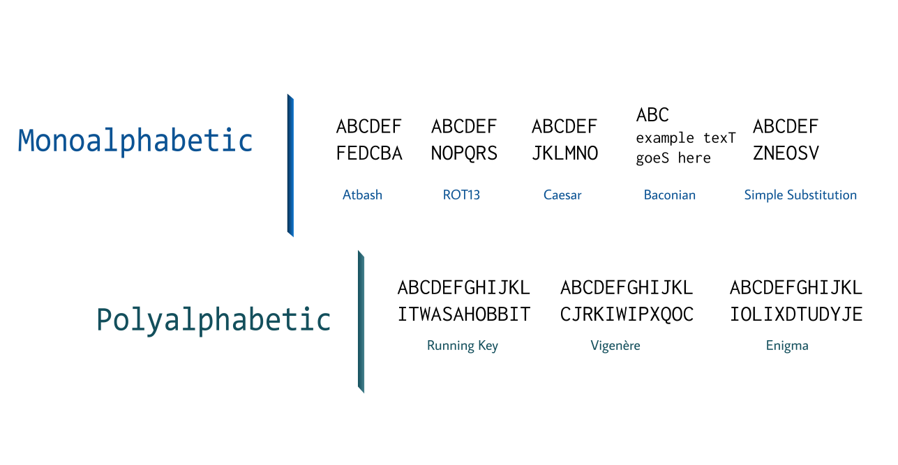Atbash
This simple cipher simply replaces the first letter of the alphabet with the last, the second with the second-to-last, and so on. (A becomes Z, B becomes Y, etc.)
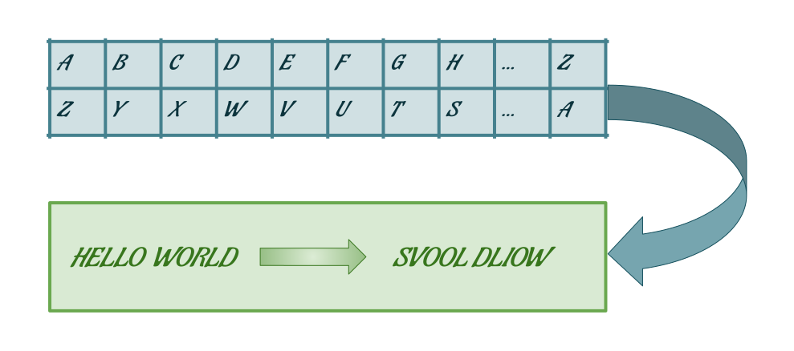CAREFUL!
Classical ciphers are not very secure and are easy to crack with today's technology. They are rather simple and were made considering that human brute forcing would be unreasonable... but of course, computers exist today.
If you're looking for a practical, secure encryption method, take a look at the modern ciphers section of this page!
ROT13
This cipher is rather simple and easy. It simply replaces a letter with the letter 13 places after it in the standard alphabet, which can still make a message obscured but easy to decipher.
Why specifically 13 spaces? This is because the basic Latin alphabet has 26 letters (2 x 13), and so both encryption and decryption would be convenient and quick.
Caesar
This cipher is famous and well-known, for one reason: it is simple and easy to understand. Of course, it provides no practical security nowadays whatsoever, but is an interesting novelty / introduction to ciphers. This develops further on ROT13, instead allowing for shifting by any number of spaces.
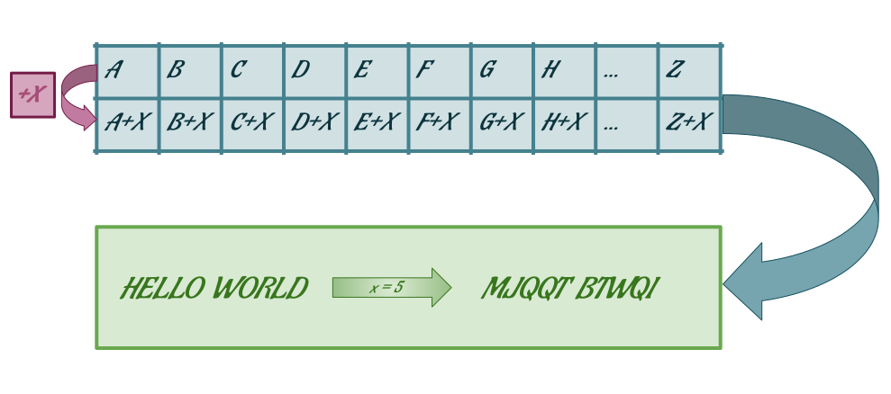Baconian
The Baconian cipher is fittingly named after its inventor, Sir Francis Bacon. Every letter is replaced by a sequence of 5 characters algorithmically, which you can see below:
| A = aaaaa | B = aaaab | C = aaaba | D = aaabb | E = aabaa | F = aabab | etc. |
How does this work? Well, we use these character sequences to strategically capitalize and uncapitalize letters (a = lowercase, b = uppercase), encoding the message into filler text.
Simple Substitution
This cipher substitutes every plaintext letter with a different ciphertext letter, based on a "cipher alphabet":
Plain alphabet: abcdefghijklmnopqrstuvwxyz
Cipher alphabet: phqgiumeaylnofdxjkrcvstzwb
Rather simple, no? The following section will brief you on polyalphabetic ciphers, a slightly more complex variation on the previously mentioned ciphers.
Running Key
The running key cipher, much like other polyalphabetic ciphers, relies on a key and a tableau to encrypt and decrypt messages.
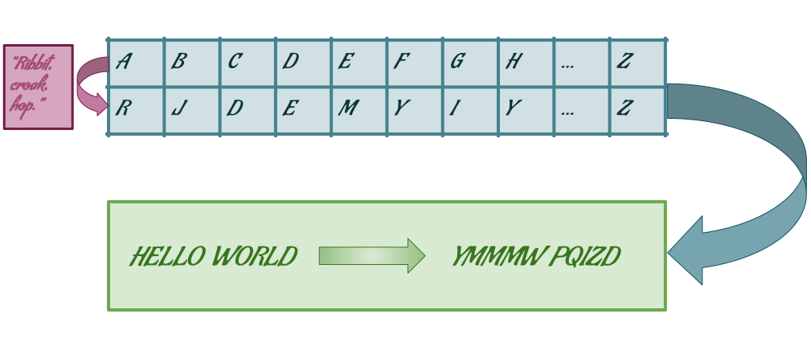
Did you know?
The tableau, or tabula recta, is a square chart of alphabets with each row being the previous row shifted one to the left. This creates a chart where any combination of two letters produces a specific letter.
This is used alongside a key for most polyalphabetic ciphers. Really interesting stuff!
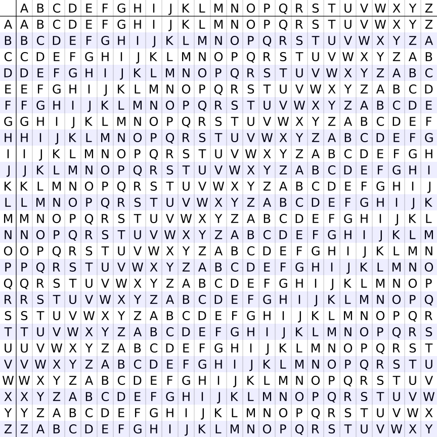
This is a tabula recta -- not too hard to understand, no?
Vigenère
This cipher is famous for being considered a "chiffre ind hiffrable" (French for "unbreakable cipher") for nearly 300 years, and is commonly used today (not in practical settings of course).
The Vigenère uses a key and tableau just like with the running key cipher, except the key is a key word rather than a full excerpt (this makes running key more 'secure' than Vigenère usually).
Repeat the same process as with running key, where the key word is repeated over and over and matched to the message's letters to generate the encrypted message.
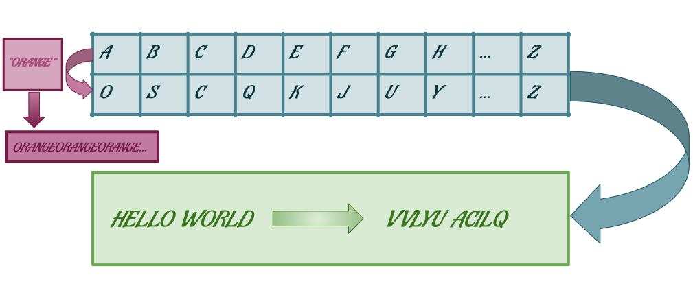
Enigma14
Did you know?
The Enigma cipher machine is famous for its use in Germany during WWII, but was conceived prior to the war. It was considered so secure that it was used for some of the most confidential messages from the highest ranks, and its extensive features proved to be a real cryptographic challenge for avid decryptors.
This cipher was very much an enigma, being far more flexible (and thus harder to decrypt) than all the previous examples.
The Enigma uses a rotor mechanism that generated a cipher alphabet and was capable of both encryption and decryption -- the flexibility of it all stems from its adjustable machine settings, commonly based on a predetermined key lists that both the transmitter and receiver would use to properly encode/decode the message.
First, there are some important considerations to note about the Enigma:
Every time a key is pressed, the entire cipher alphabet changes (so pressing the same key repeatedly won't produce the same outputs)
The three changeable components of the Enigma are the rotors, the ringstellung (ring settings), and steckerverbindungen (plug board settings).
The Enigma, at its simplest, essentially takes an input and passes through three rotors (which contain different substitution cipher alphabets), then runs through a reflector which passes the input back through the rotors backwards. To add to its complexity, the input passes through an interchangeable plugboard (which can be set to replace all instances of one letter with another) twice throughout the entire process.
How does the Enigma encrypt the same input differently every time a key is pressed? The answer is the three rotors -- every time a key is pressed, rotor I moves forward one position; when it has turned through all 26 letters encryption is based on rotor II, which repeats the process. This alone allows for 17,000 different combinations before the encryption process repeats!

This is the original 1928 patent for the Enigma machine by Arthur Scherbius. Look closely, and you can see the aforementioned encryption process!
Transposition Ciphers15
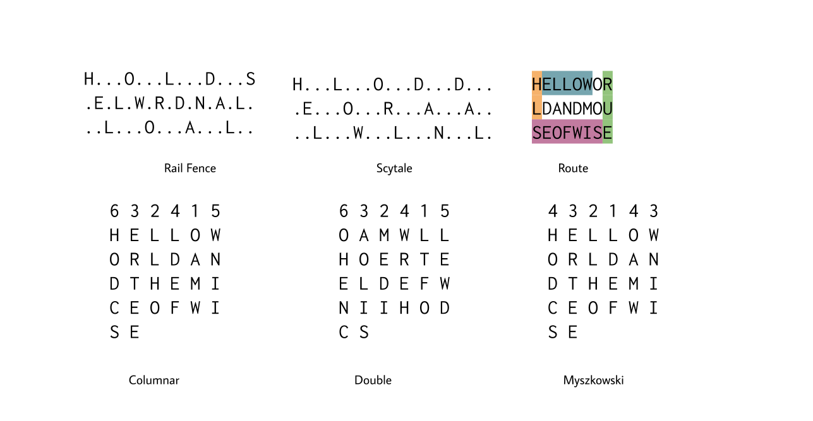CAREFUL!
It is important to note that transposition ciphers differ from substitution ciphers in that they do not preserve the order of the message! Its security comes mainly from permutations instead -- this makes them more primitive and easier to decode than substitution ciphers, but they can be the basis for stronger encryption methods.
Rail Fence
The name of this cipher comes from the method of encryption visually looking like diagonal "rails on a fence".The plaintext is written diagonally downwards and upwards in a wave pattern, and the final encryption is made by writing down each row.
So, using this method, "hello world" would be encrypted as HOLELWRDLO.
Scytale
The scytale is remarkably similar to the rail fence cipher, except instead of a "diagonally downward, diagonally upward", it is a pattern of only going diagonally downward. The encrypted message is still made based on each row.
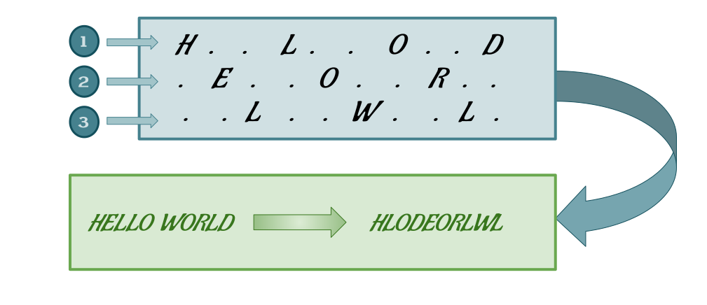
Route
The route cipher is considered surprisingly a practical and secure encryption method if messages are of a significant length (even too great for feasible brute-forcing by computers)!
The plaintext is first written out in a grid of specified width and height, and encryption/decryption depends on the key -- which specifies a "path" that determines the encrypted message.
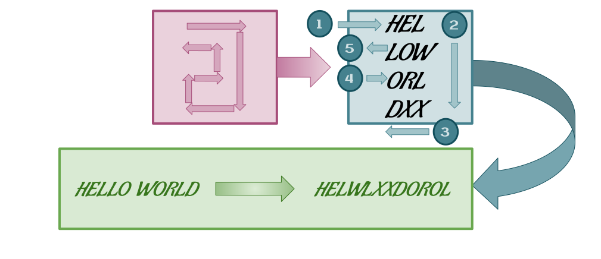
Did you know?
The route cipher variation known as the Union Route Cipher was used by Union forces during the Civil War, where entire words were transposed instead of individual letters. Since this was less secure, these words were then further encrypted using substitution.
Sometimes null words were inserted as well, not only to strengthen the message's encryption, but instead were often specifically chosen to make the ciphertext much more humorous!15
Columnar Transposition
Columnar transposition involves writing out the message in specified dimensions (much like the initial steps of route encryption) based on a keyword (whose length determines the number of columns).
Then, encryption is based on the alphabetical order of the letters in the keyword, matching each column to a set order.
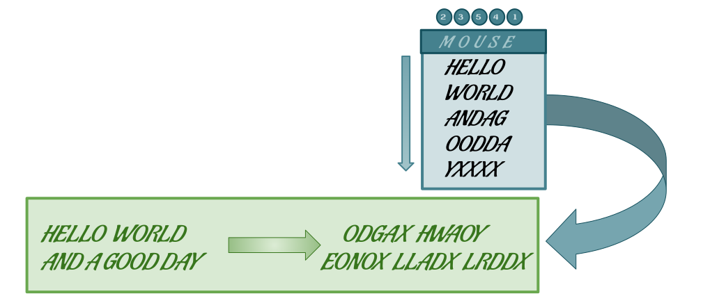
CAREFUL!
Single columnar transpositions (detailed above) are notably insecure given that the encrypted message can be written in columns and easily brute-forced. However, one easy and simple way most utilizing the columnar method used to strengthen the encryption was...
Double Transposition
...simply applying columnar transposition yet again!
Double transposition simply involves writing out the pre-transposed message with number of columns dependent on the keyword (which can be the same or different) and so forth.
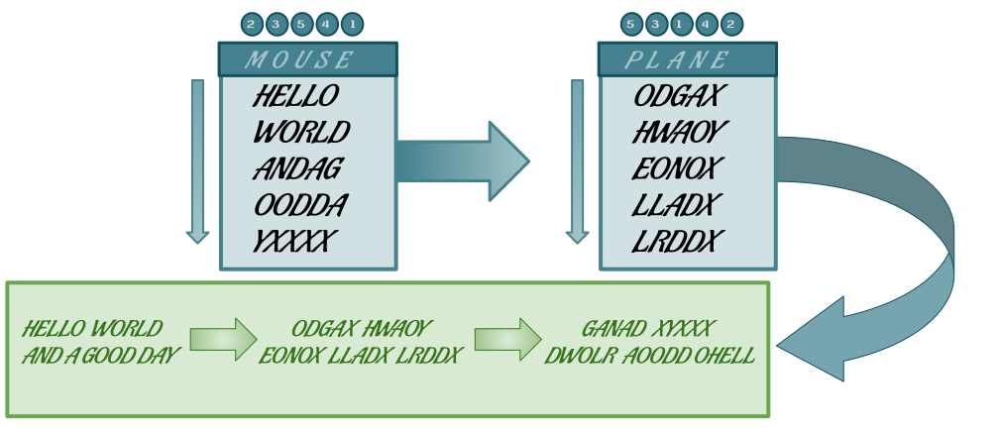
Myszkowski Transposition
Myszkowski encryption is based on columnar transposition and expands on the concept itself.
While utilizing the same process, the keyword does not have unique characters but instead purposely uses a word that has reoccurring letters (such as "tomato").
Columns with unique numbers are read downwards, while those with reoccurring letters are read from left to right.
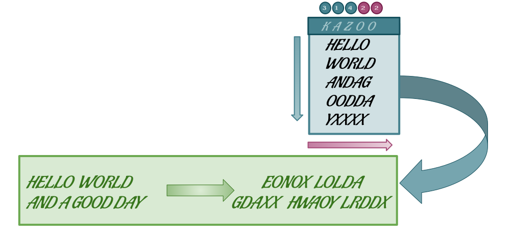
The One-Time Pad
Another very interesting cipher is the one-time pad, which is a form of encryption that is impossible to crack.
A message is paired with a secret key (consisting of a randomized set of letters), where each character of the message is matched to a character from the key using modular addition (as in, y + c would produce b).
As Wikipedia notes, the resulting encryption will be absolutely impossible to decrypt without having the key itself if the following conditions are satisfied:
The key is the same length or longer than the message.
The key is completely random and kept completely secret.
The key must never be reused in any way.
Did you know?
The one-time pad was used extensively by the NSA throughout the 1970s and onwards. Over 86,000 one-time pads were produced and used by the agency in 1972 alone!16
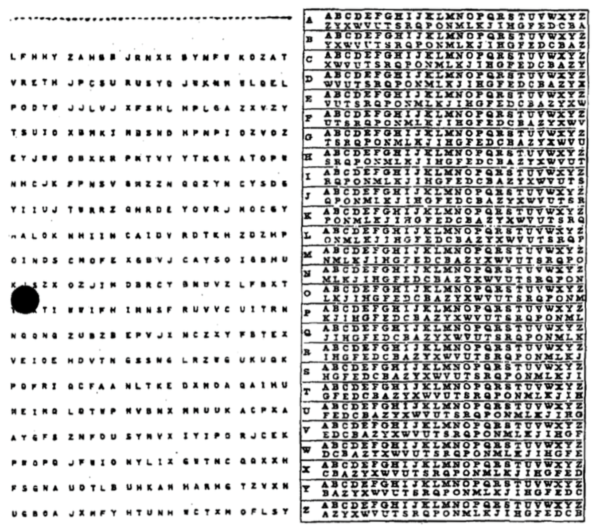
One-time pads like these were widely used by the NSA. Looks simple, but impossible to break!
Modern Ciphers17
In a world where tools such as computers can quickly and easily break through most classical ciphers, it quickly became necessary to find new methods of encryption that could be brute-forced with computers, but would be unfeasible (e.g. theoretically requiring thousands of years to correctly decrypt).
This is where modern ciphers come in -- with some of the most famous examples being encryption algorithms/hashes such as AES, RSA, and SHA.
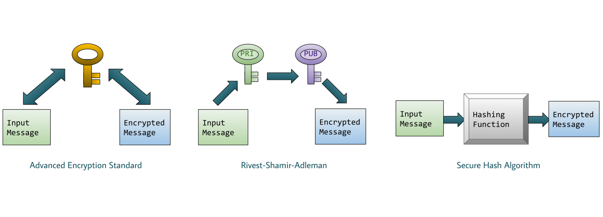
Advanced Encryption Standard (AES)18
AES is a form of encryption that relies on symmetric-key cryptography, as in one key that is kept private between both the sending and receiving parties is used for both encryption and decryption of the message.
But how does it work? In a way, it builds upon both forms of classical ciphers by using a substitution-transposition system.
Similar to classical ciphers, the same key is used to both encrypt and decrypt the message -- in fact, the process is rather similar to the complex procedure used by the Enigma cipher!
Rivest-Shamir-Adleman (RSA)
Did you know?
The RSA algorithm is named after its creators, Ron Rivest, Adi Shamir, and Leonard Adleman, who publicly disclosed the method in 1977.
However, the concept of a asymmetric-key system was first published conjointly by famous cryptographers Whitman Diffie and Martin Hellman.
When using RSA, two keys are involved in the encryption-decryption system rather than just one.
Surprisingly, these keys are not all kept secret -- instead, the encryption key is publicly disclosed while the decryption key is kept secret.
While RSA is considered very, very secure, it is relatively slow and thus isn't used for standard encryption of user data -- but still can be very useful.
Secure Hash Algorithm (SHA)19
This third form of encryption uses a method called 'hashing', where a message can be encrypted using a hashing function that produces a message that is unable to be decrypted.
So, you might ask, "why would one-way encryption be useful"? The SHA algorithm can be used to identify a message while still keeping it secure (since even two very similar messages will still produce very different hashes).
Did you know?
The SHA algorithm has gone through many different iterations throughout its life cycle.
The current version, SHA-3, was chosen by the NSA in 2012 via a public competition.